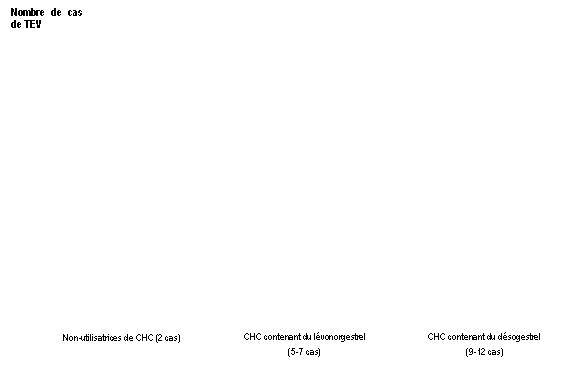

RÉSUMÉ DES CARACTÉRISTIQUES DU PRODUIT
ANSM - Mis à jour le : 01/12/2014
REGULCONT 150 microgrammes/30 microgrammes, comprimé pelliculé
2. COMPOSITION QUALITATIVE ET QUANTITATIVE
21 comprimés pelliculés blancs ou presque blancs :
Chaque comprimé pelliculé contient 150 microgrammes de désogestrel et 30 microgrammes d’éthinylestradiol.
Excipient : 67,66 mg de lactose monohydraté.
Pour la liste complète des excipients, voir rubrique 6.1.
7 comprimés pelliculés verts inactifs:
Le comprimé ne contient aucune substance active.
Excipients : 37,26 mg de lactose anhydre et 0,003 mg de colorant jaune orangé S (E110).
Pour la liste complète des excipients, voir rubrique 6.1.
Le comprimé actif pelliculé est blanc ou presque blanc, rond, biconvexe, d’environ 6 mm de diamètre. Une face porte l’inscription « P8 » et l’autre face porte l’inscription « RG ».
Le comprimé inactif pelliculé est vert, rond, biconvexe, d’environ 6 mm de diamètre, sans inscription.
4.1. Indications thérapeutiques
La décision de prescrire REGULCONT doit être prise en tenant compte des facteurs de risque de la patiente, notamment ses facteurs de risque de thrombo-embolie veineuse (TEV), ainsi que du risque de TEV associé à REGULCONT en comparaison aux autres CHC (Contraceptifs Hormonaux Combinés) (voir rubriques 4.3 et 4.4).
4.2. Posologie et mode d'administration
Les comprimés doivent être pris selon l’ordre indiqué sur la plaquette, chaque jour au même moment de la journée. Les comprimés doivent être pris sans interruption. Prendre un comprimé par jour pendant 28 jours consécutifs. Chaque plaquette suivante doit être commencée après avoir pris le dernier comprimé de la plaquette précédente. Une hémorragie de privation débute habituellement 2 ou 3 jours après le début de la prise des comprimés inactif. Il se peut qu’elle ne soit pas terminée au moment d’entamer la plaquette suivante.
Comment commencer à utiliser Regulcont
Absence de contraception hormonale le mois précédent
La prise des comprimés doit commencer le 1er jour du cycle menstruel normal (c.-à-d. le premier jour des règles). Il est également possible de commencer la prise entre le 2ème et le 5ème jour mais, pendant le premier cycle, l’utilisation simultanée d’une méthode contraceptive mécanique (barrière) est recommandée pendant les 7 premiers jours de la prise des comprimés.
Relais d'une autre méthode contraceptive estroprogestative (contraceptif oral combiné (COC), anneau vaginal ou système transdermique (patch)) :
Prendre de préférence le 1er comprimé de Regulcont le jour suivant la prise du dernier comprimé actif du contraceptif précédent ou au plus tard le jour qui suit la période habituelle d'arrêt des comprimés ou après la prise du dernier comprimé inactif du contraceptif précédent. En relais d’un anneau vaginal ou d’un patch, prendre le 1er comprimé de Regulcont de préférence le jour du retrait ou au plus tard le jour prévu pour la nouvelle pose.
Relais d’une contraception progestative seule (pilule microdosée, forme injectable, implant) ou d’un système intra-utérin (SIU) contenant un progestatif :
Le relais d’une contraception microdosée peut se faire à tout moment du cycle. Le relais d’un implant ou d’un SIU contenant un progestatif se fait le jour du retrait, ou le jour prévu pour la nouvelle injection s’il s’agit du relais d’un contraceptif injectable. Dans tous les cas, il est recommandé d’utiliser une méthode complémentaire de contraception non hormonale pendant les 7 premiers jours de traitement.
Après une interruption de grossesse du premier trimestre
Il est possible de débuter Regulcont immédiatement. Il n’est pas nécessaire d’utiliser une méthode complémentaire de contraception.
Après un accouchement ou une interruption de grossesse du deuxième trimestre
En cas d’allaitement, voir rubrique 4.6.
Il sera conseillé aux femmes de commencer Regulcont 21 à 28 jours après un accouchement ou un avortement au cours du deuxième trimestre. Si cette contraception est démarrée plus tardivement, il leur sera recommandé d’utiliser en plus une méthode contraceptive mécanique (barrière) pendant les 7 premiers jours de traitement. Cependant, si des rapports sexuels ont déjà eu lieu, il convient d’exclure une éventuelle grossesse avant le début effectif de la prise du COC ou d’attendre les premières règles.
Conduite à tenir en cas de comprimés oubliés
L’oubli de comprimés verts correspond à l’oubli de comprimés inactifs et n’a donc pas de réelle importance. Cependant, les comprimés verts oubliés doivent être jetés pour éviter de prolonger involontairement la période de prise des comprimés inactifs. Les conseils suivants s’appliquent uniquement en cas d’oubli de comprimés actifs (comprimés blancs).
Si l’oubli du comprimé est constaté dans les 12 heures après l’heure habituelle de la prise, la protection contraceptive n’est pas diminuée. Prendre immédiatement le comprimé oublié, et poursuivre la prise du COC normalement en prenant le comprimé suivant à l'heure habituelle.
Si l’oubli du comprimé est constaté plus de 12 heures après l’heure habituelle de la prise, la protection contraceptive n’est plus assurée. La conduite à tenir en cas d’oubli de comprimé sera guidée par les deux règles de base suivantes :
· la prise de comprimés ne doit jamais être interrompue pendant plus de 7 jours
· 7 jours de prise ininterrompue du traitement sont nécessaires pour obtenir une inhibition correcte de l’axe hypothalamo-hypophyso-ovarien.
Par conséquent, les conseils suivants pourront être donnés dans le cadre de la pratique quotidienne :
Semaine 1
L’utilisatrice devra prendre le dernier comprimé oublié dès que l’oubli est constaté, même si cela implique la prise de deux comprimés en même temps. Les comprimés suivants devront être pris à l’heure habituelle. En outre, une méthode contraceptive mécanique (par exemple un préservatif) devra être utilisée pendant les 7 jours suivants. Si des rapports sexuels ont eu lieu au cours des 7 jours précédents, la possibilité d’une grossesse devra être envisagée. Le risque de grossesse est d'autant plus élevé que le nombre de comprimés oubliés est important ou que la date de l'oubli est proche de l’intervalle de prise des comprimés verts inactifs.
Semaine 2
L’utilisatrice devra prendre le dernier comprimé oublié dès que l’oubli est constaté, même si cela implique la prise de deux comprimés en même temps. Les comprimés suivants devront être pris à l’heure habituelle. Si les comprimés ont été pris correctement les 7 jours précédant le premier comprimé oublié, aucune mesure contraceptive complémentaire n’est nécessaire. Cependant, si ce n’est pas le cas, ou en cas d’oubli de plusieurs comprimés, il conviendra de recommander à l’utilisatrice de prendre des précautions complémentaires pendant 7 jours.
Semaine 3
Le risque de diminution de l’activité contraceptive est maximal en raison de la proximité de la période de 7 jours de prise des comprimés inactifs. Il est cependant possible d’empêcher la diminution de l’effet contraceptif en ajustant le calendrier de prise des comprimés. Par conséquent, il n’est pas nécessaire d’avoir recours à un moyen de contraception complémentaire si l’une des deux règles ci-dessous est respectée, tant que tous les comprimés ont été pris correctement au cours des 7 jours précédant le comprimé oublié. Si ce n’est pas le cas, il conviendra de recommander à l’utilisatrice de suivre la première de ces deux options et d’utiliser en même temps un autre moyen de contraception au cours des 7 jours suivants.
Schéma 1 :
L’utilisatrice devra prendre le dernier comprimé oublié dès que l’oubli est constaté, même si cela implique la prise de deux comprimés en même temps. Elle continuera ensuite à prendre les comprimés à l’heure habituelle jusqu’à ce qu’elle ait pris tous les comprimés actifs. Les 7 comprimés verts (les comprimés inactifs) doivent être jetés. La plaquette suivante doit être commencée immédiatement. Il est peu probable que l’utilisatrice ait des règles avant la fin de la seconde plaquette mais elle peut avoir des « spottings » ou des métrorragies pendant la prise de comprimés.
Schéma 2 :
L’utilisatrice peut également arrêter de prendre les comprimés actifs de la plaquette actuelle. Dans ce cas, elle doit alors prendre les comprimés verts (comprimés inactifs) pendant une période de 7 jours maximum, incluant le nombre de jours où des comprimés ont été oubliés, et continuera ensuite avec la nouvelle plaquette.
Si l’utilisatrice a oublié plusieurs comprimés et que ses règles ne surviennent pas au cours de la première période normale de prise des comprimés inactifs, la possibilité d’une grossesse devra être envisagée.
Conduite à tenir en cas de vomissements ou de diarrhée sévère
Si des vomissements ou une diarrhée sévère surviennent dans les 3 à 4 heures suivant la prise du comprimé, l’absorption du comprimé peut ne pas être complète. Si des vomissements surviennent dans les 3 à 4 heures suivant la prise du comprimé actif, un nouveau comprimé (de remplacement) devra être pris dès que possible. Le nouveau comprimé devra si possible être pris dans les 12 heures qui suivent l’heure habituelle de prise du comprimé. Si plus de 12 heures se sont écoulées, les consignes concernant les oublis de comprimés décrites plus haut dans la rubrique 4.2. s’appliquent. Si l’utilisatrice ne veut pas modifier son calendrier normal de prise des comprimés, elle devra prendre le ou les autre(s) comprimé(s) dans une autre plaquette.
Comment retarder une hémorragie de privation
Pour retarder ses règles, l’utilisatrice doit commencer une nouvelle plaquette de Regulcont sans prendre les comprimés inactifs de la plaquette en cours. Les règles peuvent être retardées jusqu'à la fin des comprimés actifs de la seconde plaquette si nécessaire.
Pendant cette période, des métrorragies ou des « spottings » peuvent se produire.
L’utilisatrice peut ensuite reprendre Regulcont normalement après la prise des comprimés inactifs.
Pour décaler ses règles à un autre jour de la semaine que celui auquel elle est habituée avec le schéma en cours, il convient de lui conseiller de raccourcir la durée de la période de prise des comprimés inactifs suivante d’autant de jours qu’elle le désire. Il est possible de décaler la survenue des règles à un autre jour de la semaine en raccourcissant la durée de la prise des comprimés inactifs du nombre de jours nécessaires.
Comme pour un retard de règles, plus l'intervalle est court, plus le risque d'absence d'hémorragie de privation et de survenue de métrorragies ou de « spottings » lors de la prise des comprimés de la plaquette suivante est important.
En cas de survenue pour la première fois de l'une de ces pathologies lors de la prise d’un CHC, interrompre immédiatement le traitement :
· Présence ou risque de thrombo-embolie veineuse (TEV) :
o Thrombo-embolie veineuse – présence de TEV (patiente traitée par des anticoagulants) ou antécédents de TEV (p. ex. thrombose veineuse profonde [TVP] ou embolie pulmonaire [EP]).
o Prédisposition connue, héréditaire ou acquise, à la thrombo-embolie veineuse, telle qu’une résistance à la protéine C activée (PCa) (y compris une mutation du facteur V de Leiden), un déficit en antithrombine III, un déficit en protéine C, un déficit en protéine S.
o Intervention chirurgicale majeure avec immobilisation prolongée (voir rubrique 4.4).
o Risque élevé de thrombo-embolie veineuse dû à la présence de multiples facteurs de risque (voir rubrique 4.4).
· Présence ou risque de thrombo-embolie artérielle (TEA) :
o Thrombo-embolie artérielle – présence ou antécédents de thrombo-embolie artérielle (p. ex. infarctus du myocarde [IM]) ou de prodromes (p. ex. angine de poitrine).
o Affection cérébrovasculaire – présence ou antécédents d’accident vasculaire cérébral (AVC) ou de prodromes (p. ex. accident ischémique transitoire [AIT]).
o Prédisposition connue, héréditaire ou acquise, à la thrombo-embolie artérielle, telle qu’une hyperhomocystéinémie ou la présence d’anticorps anti-phospholipides (anticorps anti-cardiolipine, anticoagulant lupique).
o Antécédents de migraine avec signes neurologiques focaux.
o Risque élevé de thrombo-embolie artérielle dû à la présence de multiples facteurs de risque (voir rubrique 4.4) ou d’un facteur de risque sévère tel que :
§ diabète avec symptômes vasculaires,
§ hypertension artérielle sévère,
§ dyslipoprotéinémie sévère,
· Pancréatite ou antécédent de pancréatite associée à une hypertriglycéridémie sévère.
· Présence ou antécédent d’affection hépatique sévère tant que les paramètres de la fonction hépatique ne sont pas normalisés.
· Tumeur hépatique (bénigne ou maligne) évolutive ou ancienne.
· Tumeur maligne hormono-dépendante connue ou suspectée (exemple: organes génitaux ou seins).
· Hyperplasie endométriale.
· Hémorragies génitales non diagnostiquées.
· Grossesse connue ou suspectée.
· Hypersensibilité aux substances actives ou à l’un des excipients mentionnés à la rubrique 6.1.
4.4. Mises en garde spéciales et précautions d'emploi
Si la patiente présente l’un des troubles ou l’un des facteurs de risque mentionnés ci-dessous, la pertinence du traitement par REGULCONT doit être discutée avec elle.
En cas d’aggravation ou de survenue de l’un de ces troubles ou facteurs de risque, la nécessité d’interrompre l’utilisation de REGULCONT doit être discutée entre le médecin et la patiente.
· Troubles circulatoires :
Risque de thrombo-embolie veineuse (TEV)
Le risque de TEV est augmenté chez les femmes qui utilisent un contraceptif hormonal combiné (CHC) en comparaison aux femmes qui n’en utilisent pas. Les CHC contenant du lévonorgestrel, du norgestimate ou de la noréthistérone sont associés au risque de TEV le plus faible. Le risque de TEV associé aux autres CHC, tels que REGULCONT, peut être jusqu’à deux fois plus élevé. La décision d’utiliser tout autre CHC que ceux associés au risque de TEV le plus faible doit être prise uniquement après concertation avec la patiente afin de s’assurer qu’elle comprend le risque de TEV associé à REGULCONT, l’influence de ses facteurs de risque actuels sur ce risque et le fait que le risque de TEV est maximal pendant la première année d’utilisation. Certaines données indiquent également une augmentation du risque lors de la reprise d’un CHC après une interruption de 4 semaines ou plus.
Parmi les femmes qui n’utilisent pas de CHC et qui ne sont pas enceintes, environ 2 sur 10 000 développeront une TEV sur une période d’un an. Cependant, chez une femme donnée, le risque peut être considérablement plus élevé, selon les facteurs de risque qu’elle présente (voir ci-dessous).
On estime1 que sur 10 000 femmes qui utilisent un CHC contenant du désogestrel, 9 à 12 développeront une TEV sur une période d’un an ; ce nombre est à comparer à celui d’environ 62 chez les femmes qui utilisent un CHC contenant du lévonorgestrel.
Dans les deux cas, le nombre de TEV par année est inférieur à celui attendu pendant la grossesse ou en période post-partum.
La TEV peut être fatale dans 1 à 2 % des cas.
1 Ces incidences ont été estimées à partir de l’ensemble des données des études épidémiologiques, en s’appuyant sur les risques relatifs liés aux différents CHC en comparaison aux CHC contenant du lévonorgestrel.
2 Point central de l’intervalle de 5-7 pour 10 000 années-femmes sur la base d’un risque relatif, pour les CHC contenant du lévonorgestrel par rapport à la non-utilisation d’un CHC, d’environ 2,3 à 3,6.
Nombre de cas de TEV pour 10 000 femmes sur une période d’un an

De façon extrêmement rare, des cas de thrombose ont été signalés chez des utilisatrices de CHC dans d’autres vaisseaux sanguins, p. ex. les veines et artères hépatiques, mésentériques, rénales ou rétiniennes.
Facteurs de risque de TEV
Le risque de complications thrombo-emboliques veineuses chez les utilisatrices de CHC peut être considérablement accru si d’autres facteurs de risque sont présents, en particulier si ceux-ci sont multiples (voir le tableau ci-dessous).
REGULCONT est contre-indiqué chez les femmes présentant de multiples facteurs de risque, ceux-ci les exposant à un risque élevé de thrombose veineuse (voir rubrique 4.3). Lorsqu’une femme présente plus d’un facteur de risque, il est possible que l’augmentation du risque soit supérieure à la somme des risques associés à chaque facteur pris individuellement – dans ce cas, le risque global de TEV doit être pris en compte. Si le rapport bénéfice/risque est jugé défavorable, le CHC ne doit pas être prescrit (voir rubrique 4.3).
Tableau : Facteurs de risque de TEV
|
Facteur de risque |
Commentaire |
|
Obésité (indice de masse corporelle supérieur à 30 kg/m²) |
L’élévation de l’IMC augmente considérablement le risque. Ceci est particulièrement important à prendre en compte si d’autres facteurs de risque sont présents. |
|
Immobilisation prolongée, intervention chirurgicale majeure, toute intervention chirurgicale sur les jambes ou le bassin, neurochirurgie ou traumatisme majeur
Remarque : l’immobilisation temporaire, y compris les trajets aériens > 4 heures, peut également constituer un facteur de risque de TEV, en particulier chez les femmes présentant d’autres facteurs de risque |
Dans ces situations, il est conseillé de suspendre l’utilisation de la pilule (au moins quatre semaines à l’avance en cas de chirurgie programmée) et de ne reprendre le CHC que deux semaines au moins après la complète remobilisation. Une autre méthode de contraception doit être utilisée afin d’éviter une grossesse non désirée. Un traitement anti-thrombotique devra être envisagé si REGULCONT, comprimé pelliculé n’a pas été interrompu à l’avance.
|
|
Antécédents familiaux (thrombo-embolie veineuse survenue dans la fratrie ou chez un parent, en particulier à un âge relativement jeune, c.-à-d. avant 50 ans) |
En cas de prédisposition héréditaire suspectée, la femme devra être adressée à un spécialiste pour avis avant toute décision concernant l’utilisation de CHC |
|
Autres affections médicales associées à la TEV |
Cancer, lupus érythémateux disséminé, syndrome hémolytique et urémique, maladies inflammatoires chroniques intestinales (maladie de Crohn ou rectocolite hémorragique) et drépanocytose |
|
Âge |
En particulier au-delà de 35 ans |
Il n’existe aucun consensus quant au rôle éventuel joué par les varices et les thrombophlébites superficielles dans l’apparition ou la progression d’une thrombose veineuse.
L’augmentation du risque de thrombo-embolie pendant la grossesse, et en particulier pendant les 6 semaines de la période puerpérale, doit être prise en compte (pour des informations concernant « Grossesse et allaitement », voir rubrique 4.6).
Symptômes de TEV (thrombose veineuse profonde et embolie pulmonaire)
Les femmes doivent être informées qu’en cas d’apparition de ces symptômes, elles doivent consulter un médecin en urgence et lui indiquer qu’elles utilisent un CHC.
Les symptômes de la thrombose veineuse profonde (TVP) peuvent inclure :
· gonflement unilatéral d’une jambe et/ou d’un pied ou le long d’une veine de la jambe ;
· douleur ou sensibilité dans une jambe, pouvant n’être ressentie qu’en position debout ou lors de la marche ;
· sensation de chaleur, rougeur ou changement de la coloration cutanée de la jambe affectée.
Les symptômes de l’embolie pulmonaire (EP) peuvent inclure :
· apparition soudaine et inexpliquée d’un essoufflement ou d’une accélération de la respiration ;
· toux soudaine, pouvant être associée à une hémoptysie ;
· douleur thoracique aiguë ;
· étourdissements ou sensations vertigineuses sévères ;
· battements cardiaques rapides ou irréguliers.
Certains de ces symptômes (p. ex. « essoufflement », « toux ») ne sont pas spécifiques et peuvent être interprétés à tort comme des signes d’événements plus fréquents ou moins sévères (infections respiratoires, p. ex.).
Les autres signes d’une occlusion vasculaire peuvent inclure : douleur soudaine, gonflement et coloration légèrement bleutée d’une extrémité.
Si l’occlusion se produit dans l’œil, les symptômes peuvent débuter sous la forme d’une vision trouble indolore pouvant évoluer vers une perte de la vision. Dans certains cas, la perte de la vision peut survenir presque immédiatement.
Risque de thrombo-embolie artérielle (TEA)
Des études épidémiologiques ont montré une association entre l’utilisation de CHC et l’augmentation du risque de thrombo-embolie artérielle (infarctus du myocarde) ou d’accident cérébrovasculaire (p. ex. accident ischémique transitoire, AVC). Les événements thrombo-emboliques artériels peuvent être fatals.
Facteurs de risque de TEA
Le risque de complications thrombo-emboliques artérielles ou d’accident cérébrovasculaire chez les utilisatrices de CHC augmente avec la présence de facteurs de risque (voir le tableau). REGULCONT est contre-indiqué chez les femmes présentant un facteur de risque sévère ou de multiples facteurs de risque de TEA qui les exposent à un risque élevé de thrombose artérielle (voir rubrique 4.3).
Lorsqu’une femme présente plus d’un facteur de risque, il est possible que l’augmentation du risque soit supérieure à la somme des risques associés à chaque facteur pris individuellement – dans ce cas, le risque global doit être pris en compte. Si le rapport bénéfice/risque est jugé défavorable, le CHC ne doit pas être prescrit (voir rubrique 4.3).
Tableau : Facteurs de risque de TEA
|
Facteur de risque |
Commentaire |
|
Âge |
En particulier au-delà de 35 ans |
|
Tabagisme |
Il doit être conseillé aux femmes de ne pas fumer si elles souhaitent utiliser un CHC. Il doit être fortement conseillé aux femmes de plus de 35 ans qui continuent de fumer d’utiliser une méthode de contraception différente. |
|
Hypertension artérielle |
|
|
Obésité (indice de masse corporelle supérieur à 30 kg/m2) |
L’élévation de l’IMC augmente considérablement le risque. Ceci est particulièrement important à prendre en compte chez les femmes présentant d’autres facteurs de risque. |
|
Antécédents familiaux (thrombo-embolie artérielle survenue dans la fratrie ou chez un parent, en particulier à un âge relativement jeune, c.-à-d. avant 50 ans) |
En cas de prédisposition héréditaire suspectée, la femme devra être adressée à un spécialiste pour avis avant toute décision concernant l’utilisation de CHC. |
|
Migraine |
L’accroissement de la fréquence ou de la sévérité des migraines lors de l’utilisation d’un CHC (qui peut être le prodrome d’un événement cérébrovasculaire) peut constituer un motif d’arrêt immédiat du CHC. |
|
Autres affections médicales associées à des événements indésirables vasculaires |
Diabète, hyperhomocystéinémie, valvulopathie cardiaque et fibrillation auriculaire, dyslipoprotéinémie et lupus érythémateux disséminé |
Symptômes de TEA
Les femmes doivent être informées qu’en cas d’apparition de ces symptômes, elles doivent consulter un médecin en urgence et lui indiquer qu’elles utilisent un CHC.
Les symptômes d’un accident cérébrovasculaire peuvent inclure :
· apparition soudaine d’un engourdissement ou d’une faiblesse du visage, d’un bras ou d’une jambe, en particulier d’un côté du corps ;
· apparition soudaine de difficultés à marcher, de sensations vertigineuses, d’une perte d’équilibre ou de coordination ;
· apparition soudaine d’une confusion, de difficultés à parler ou à comprendre ;
· apparition soudaine de difficultés à voir d’un œil ou des deux yeux ;
· céphalée soudaine, sévère ou prolongée, sans cause connue ;
· perte de conscience ou évanouissement avec ou sans crise convulsive.
Des symptômes temporaires suggèrent qu’il s’agit d’un accident ischémique transitoire (AIT).
Les symptômes de l’infarctus du myocarde (IM) peuvent inclure :
· douleur, gêne, pression, lourdeur, sensation d’oppression ou d’encombrement dans la poitrine, le bras ou sous le sternum ;
· sensation de gêne irradiant vers le dos, la mâchoire, la gorge, le bras, l’estomac ;
· sensation d’encombrement, d’indigestion ou de suffocation ;
· transpiration, nausées, vomissements ou sensations vertigineuses ;
· faiblesse, anxiété ou essoufflement extrêmes ;
· battements cardiaques rapides ou irréguliers.
Lorsqu’il considère le rapport bénéfice/risque, le médecin doit prendre en considération que le traitement adéquat d’une pathologie peut entraîner une diminution du risque associé de thrombose et que le risque associé à la grossesse est supérieur au risque associé à l’utilisation des CHC.
· Tumeurs
Certaines études épidémiologiques suggèrent que les contraceptifs estroprogestatifs pourraient être associés à une augmentation du risque de cancer du col de l'utérus chez les utilisatrices de COC à long terme (> 5 ans). Il n'est cependant pas établi si ces pathologies sont dues à d'autres facteurs comme le comportement sexuel et le papillomavirus virus humain (HPV).
Une méta-analyse de 54 études épidémiologiques a conclu qu'il existe une légère augmentation du risque relatif (RR = 1,24) de diagnostic du cancer du sein chez les femmes sous contraception estroprogestative. Cette majoration du risque disparaît progressivement au cours des 10 ans qui suivent l’arrêt d'une contraception estroprogestative.
Le cancer du sein étant rare chez les femmes de moins de 40 ans, le nombre plus élevé de cancers diagnostiqués chez les utilisatrices habituelles ou nouvelles utilisatrices d'une contraception estroprogestative reste faible par rapport au risque global de cancer du sein.
Ces études ne permettent pas d'établir une relation de causalité. Il est possible que, chez les utilisatrices de contraception orale, cette augmentation du risque soit due à un diagnostic plus précoce du cancer du sein, aux effets biologiques de cette contraception ou à l'association des deux. Les cancers du sein diagnostiqués chez les utilisatrices de COC ont tendance à être moins évolués cliniquement par rapport à ceux diagnostiqués chez des femmes n'en ayant jamais utilisé.
Dans de rares cas, des tumeurs bénignes du foie, et dans de plus rares cas encore, des tumeurs malignes du foie ont été rapportées chez des utilisatrices de contraceptifs estroprogestatifs. Dans des cas isolés, ces tumeurs ont conduit à des hémorragies intra-abdominales mettant en jeu le pronostic vital. Chez les femmes sous contraceptifs oraux, la survenue de douleurs de la partie supérieure de l'abdomen, d'augmentation du volume du foie ou de signes d'hémorragie intra-abdominale doit faire évoquer une tumeur hépatique.
La taille des fibromes utérins peut changer après l’administration de COC.
L’utilisation de contraceptifs estroprogestatifs plus fortement dosés (50 µg éthinylestradiol) diminue le risque de cancer de l’endomètre et de l’ovaire. Ceci demande à être confirmé avec les contraceptifs estroprogestatifs plus faiblement dosés.
· Autres pathologies :
Chez les femmes atteintes d'hypertriglycéridémie ou ayant des antécédents familiaux d'hypertriglycéridémie, un risque accru de pancréatite peut survenir en cas d’utilisation d'une contraception estroprogestative.
Une augmentation modérée de la pression artérielle a été observée chez de nombreuses femmes sous contraception estroprogestative : rarement cliniquement significative. Une interruption immédiate de la contraception orale n’est justifiée que dans ces rares cas.
La persistance de chiffres tensionnels élevés ou le non contrôle des chiffres tensionnels par un traitement antihypertenseur chez une femme hypertendue prenant une contraception estroprogestative doit faire interrompre celle-ci.
Cette contraception pourra éventuellement être reprise après normalisation des chiffres tensionnels par un traitement antihypertenseur.
La survenue ou l'aggravation des pathologies suivantes a été observée au cours de la grossesse ou chez des femmes prenant des contraceptifs estroprogestatifs, bien que la responsabilité des estroprogestatifs n'ait pu être établie : ictère et/ou prurit dû à une cholestase, lithiase biliaire, porphyrie, lupus érythémateux disséminé, syndrome syndrome hémolytique et urémique, chorée de Sydenham, herpès gravidique, hypoacousie dû à une otospongiose.
Chez les femmes présentant un angioedème héréditaire, les estrogènes exogènes peuvent induire ou aggraver des symptômes d’angioedème.
La survenue d'anomalies hépatiques aiguës ou chroniques peut nécessiter l'arrêt des contraceptifs estroprogestatifs jusqu'à la normalisation des paramètres hépatiques.
La récidive d'un ictère cholestatique et/ou d'un prurit liés à une cholestase survenue au cours d'une grossesse précédente ou de la prise antérieure d'hormones stéroïdiennes doit faire arrêter les contraceptifs estroprogestatifs.
Les contraceptifs estroprogestatifs peuvent avoir un effet sur la résistance périphérique à l'insuline et la tolérance au glucose ; il n'est cependant pas obligatoire de modifier le traitement chez des diabétiques utilisant une contraception estroprogestative faiblement dosée (contenant moins de 0,05 mg d'éthinylestradiol). Les femmes diabétiques doivent cependant être étroitement surveillées, en particulier lors de l'instauration d'une contraception estroprogestative.
Des cas d'aggravations de dépression endogène, d'épilepsie, de maladie de Crohn et de rectocolite hémorragique ont été observés sous contraceptifs estroprogestatifs.
Un chloasma peut survenir, en particulier chez les femmes ayant des antécédents de chloasma gravidique. Les femmes ayant une prédisposition au chloasma sous contraceptifs estroprogestatifs doivent éviter de s'exposer au soleil ou aux rayons ultra-violets.
Ce médicament contient du lactose. Son utilisation est déconseillée chez les patientes présentant une intolérance au galactose, un déficit en lactase de Lapp ou un syndrome de malabsorption du glucose ou du galactose (maladies héréditaires rares).
Ce médicament contient un agent colorant azoïque le jaune orangé S (E110) et peut provoquer des réactions allergiques.
Consultation/examen médical
Avant l’instauration ou la reprise d’un traitement par REGULCONT, une recherche complète des antécédents médicaux (y compris les antécédents familiaux) doit être effectuée et la présence d’une grossesse doit être exclue. La pression artérielle doit être mesurée et un examen physique doit être réalisé, en ayant à l’esprit les contre-indications (voir rubrique 4.3) et les mises en garde (voir rubrique 4.4). Il est important d’attirer l’attention des patientes sur les informations relatives à la thrombose veineuse et artérielle, y compris le risque associé à REGULCONT comparé à celui associé aux autres CHC, les symptômes de la TEV et de la TEA, les facteurs de risque connus et la conduite à tenir en cas de suspicion de thrombose.
Il doit également être indiqué aux patientes de lire attentivement la notice et de suivre les conseils fournis. La fréquence et la nature des examens doivent être définies sur la base des recommandations en vigueur et adaptées à chaque patiente.
Les patientes doivent être averties que les contraceptifs hormonaux ne protègent pas contre l’infection par le VIH (SIDA) et les autres maladies sexuellement transmissibles.
Diminution de l’efficacité :
L'efficacité d’une COC peut être diminuée en cas d'oubli de comprimés (voir rubrique 4.2), de troubles gastro-intestinaux (voir rubrique 4.2) ou de prise concomitante de certains traitements (voir rubrique 4.5).
Les préparations à base de plantes contenant du millepertuis (hypericum perforatum) ne doivent pas être prises simultanément avec REGULCONT en raison du risque de diminution des concentrations plasmatiques et des effets cliniques de REGULCONT (voir rubrique 4.5).
Troubles du cycle :
Des saignements irréguliers (« spottings » ou métrorragies) peuvent survenir sous contraceptifs estroprogestatifs, en particulier au cours des premiers mois. Ces saignements irréguliers seront considérés comme significatifs s'ils persistent après environ 3 cycles.
Si les saignements irréguliers persistent ou surviennent après des cycles réguliers, une recherche étiologique non hormonale doit alors être effectuée; des examens diagnostiques appropriés doivent être pratiqués afin d'exclure une tumeur maligne ou une grossesse. Ces examens peuvent comporter un curetage.
Chez certaines femmes, les hémorragies de privation peuvent ne pas survenir au cours de la prise des comprimés placebo. Si la contraception orale a été suivie telle que décrite dans la rubrique 4.2, il est peu probable que la femme soit enceinte.
Cependant, si la contraception orale n'a pas été suivie correctement avant l’absence de la première hémorragie de privation ou si deux hémorragies de privation successives ne se produisent pas, il convient de s'assurer de l'absence de grossesse avant de poursuivre cette contraception.
4.5. Interactions avec d'autres médicaments et autres formes d'interactions
Influence d’autres médicaments sur Regulcont
Des interactions conduisant à une augmentation de la clairance des hormones sexuelles peuvent entraîner des saignements irréguliers (métrorragies) et une diminution de l’effet contraceptif.
Ceci a été établi avec les hydantoïnes, le phénobarbital, la primidone, la carbamazépine, la rifampicine et le bosentan. Possiblement, l’oxcarbazepine, le topiramate, le felbamate, la griséofulvine et la névirapine peuvent avoir les mêmes effets. Il semble que cette interaction soit basée sur les propriétés d’induction enzymatique hépatique de ces médicaments. L’induction enzymatique maximale ne s’observe généralement que 2 à 3 semaines après le début du traitement, mais elle peut persister pendant au moins 4 semaines après l’arrêt du traitement.
Les femmes prenant pendant une courte durée (une semaine maximum) un des médicaments cités ci-dessus ou un médicament appartenant à l’une des classes citées ci-dessus doivent utiliser temporairement une méthode contraceptive mécanique (barrière) en plus du COC, c.-à-d. pendant toute la durée du traitement concomitant et pendant les 7 jours qui suivent l’arrêt de ce traitement. Pour les femmes recevant un traitement par la rifampicine, une méthode contraceptive mécanique (barrière) doit être utilisée en plus du COC pendant toute la durée de l’administration de la rifampicine et pendant 28 jours après l’arrêt de ce médicament. Si la prise du médicament concomitant va au-delà de la fin des comprimés de la plaquette du COC, l’utilisatrice doit commencer la nouvelle plaquette sans observer la période habituelle réservée à la prise de comprimés inactifs.
Chez les femmes prenant un traitement à long terme par des substances actives ayant une action inductrice sur les enzymes hépatiques, une autre méthode de contraception fiable, non hormonale est recommandée.
La plante médicinale millepertuis (Hypericum perforatum) ne doit pas être prise simultanément avec ce médicament car elle pourrait potentiellement résulter en un échec de la contraception. Des métrorragies et des grossesses non désirées ont été rapportées, dues au millepertuis qui possède un effet inducteur sur les enzymes responsables de la dégradation du médicament. L’effet inducteur peut se prolonger pendant au moins 2 semaines après l’arrêt du traitement à base de millepertuis.
L’administration concomitante de ritonavir avec un COC fixe entraîne une diminution de l’ASC moyenne de l’éthinylestradiol de 41 % ; une augmentation des doses de COC contenant de l’éthinylestradiol ou l’utilisation d’autres méthodes contraceptives devra être envisagée.
Influence de Regulcont sur d’autres médicaments
Les contraceptifs oraux peuvent avoir un effet sur le métabolisme de certaines autres substances actives.
Par exemple, les concentrations plasmatiques et tissulaires de la lamotrigine peuvent soit augmenter soit diminuer.
Examens biologiques
L’utilisation de contraceptifs oraux peut modifier les résultats de certains examens biologiques, tels que : les tests fonctionnels hépatiques, thyroïdiens, surrénaliens et rénaux, le taux plasmatique des protéines (porteuses) comme la corticosteroid-binding globulin (CBG) et des fractions lipidiques/lipoprotéiniques, les paramètres du métabolisme glucidique, les paramètres de la coagulation et de la fibrinolyse. Les modifications restent en général dans les limites de la normale.
Grossesse
REGULCONT n’est pas indiqué pendant la grossesse. Si une grossesse survient au cours de l’utilisation de REGULCONT, la prise de REGULCONT doit immédiatement être interrompue.
De nombreuses études épidémiologiques n’ont pas révélé d’augmentation du risque d’anomalies congénitales chez les enfants nés de femmes ayant utilisé un contraceptif oral avant la grossesse.
Aucun effet tératogène n’a été observé lorsqu’un contraceptif oral combiné a été pris par erreur en début de grossesse.
L’augmentation du risque de TEV en période post-partum doit être prise en compte lors de la reprise de REGULCONT (voir rubriques 4.2 et 4.4).
Allaitement
L’allaitement peut être influencé par les COCs car ils sont susceptibles de réduire la quantité de lait maternel et d’en modifier la composition. C’est pourquoi, l’utilisation de COCs n’est pas recommandée avant que la mère qui allaite ait complètement sevré son enfant. De petites quantités de stéroïdes contraceptifs et/ou de leurs métabolites peuvent être excrétées dans le lait lors de l’utilisation de COC. Rien n’indique que ceci a des répercussions négatives sur la santé de l’enfant.
4.7. Effets sur l'aptitude à conduire des véhicules et à utiliser des machines
Regulcont n’a aucun effet sur l’aptitude à conduire des véhicules et à utiliser des machines.
Pour les effets indésirables graves chez les utilisatrices de COC, voir la rubrique 4.4.
Il existe un risque accru de thromboembolie veineuse chez toutes les femmes qui utilisent un CHC. Pour toute information relative aux différences de risque entre les CHC, voir la rubrique 4.4.
Les effets secondaires ayant un lien possible avec le traitement qui ont été rapportés chez les utilisatrices de COC contenant 150 microgrammes de désogestrel et 30 microgrammes d’éthinylestradiol ou les utilisatrices de CHC en général sont énumérés dans le tableau ci-dessous3. Tous les effets indésirables sont classés par classe de systèmes d’organes et par fréquence : très fréquent (≥ 1/10), fréquent (≥ 1/100 à <1/10), peu fréquent (≥ 1/1000 à <1/100), rare (< 1/1000), très rare (<1/10 000) et indéterminé (ne peut être estimée à partir des données disponibles).
|
Classe de systèmes d’organes |
Très fréquent (> 1/10) |
Fréquent (≥1/100 ; <1/10) |
Peu fréquent (≥ 1/1000; <1/100 |
Rare (< 1/1000) |
|
Infections et infestations |
|
|
|
Candidose vaginale |
|
Affections du système immunitaire |
|
|
|
Hypersensibilité |
|
Troubles du métabolisme et de la nutrition |
|
|
Rétention hydrique |
|
|
Affections psychiatriques |
|
Humeur dépressive Altération de l’humeur
|
Diminution de la libido
|
Augmentation de la libido
|
|
Affections du système nerveux |
|
Céphalées Vertiges Nervosité |
Migraine |
|
|
Affections oculaires |
|
|
|
Intolérance aux lentilles de contact |
|
Troubles de l’oreille et du labyrinthe |
|
|
Otospongiose |
|
|
Affections vasculaires |
|
|
Hypertension |
Thrombo-embolie veineuse ou artérielle |
|
Affections gastro-intestinales |
|
Nausées Douleurs abdominales |
Diarrhée Vomissements |
|
|
Affections de la peau et du tissu sous-cutané |
|
Acné |
Éruption cutanée Urticaire |
Érythème noueux Érythème polymorphe Prurit Alopécie |
|
Affections des organes de reproduction et du sein |
Dysménorrhée |
Aménorrhée Tension mammaire Douleur mammaire Métrorragie |
Augmentation du volume mammaire |
Ecoulement vaginal Écoulements mammaires |
|
Troubles généraux et anomalies au site d’administration |
Prise de poids |
|
|
Perte de poids |
3 le terme MeDRA le plus approprié pour décrire un effet indésirable donné est mentionné. Les synonymes ou les affections apparentées ne sont pas indiquées, mais il conviendra également d’en tenir compte.
Description de certains effets indésirables particuliers
Une augmentation du risque d’événement thrombotique et thrombo-embolique artériel et veineux, incluant l’infarctus du myocarde, l’AVC, les accidents ischémiques transitoires, la thrombose veineuse et l’embolie pulmonaire, a été observée chez les femmes utilisant des CHC ; ceci est abordé plus en détail en rubrique 4.4.
De nombreux effets indésirables ont également été observés chez des femmes utilisants des COC ; ceci est abordé plus en détails à la rubrique 4.4.
· hypertension,
· tumeurs hormonodépendantes ( par ex. tumeurs hépatiques, cancer du sein)
· survenue ou aggravation d'affections dont l'association avec les COC n'est pas certaine : maladie de Crohn, rectocolite hémorragique, épilepsie, migraine, endométriose, fibrome utérin, porphyrie, lupus érythémateux disséminé, herpès gravidique, chorée de Sydenham, syndrome urémique et hémolytique, ictère cholestatique,
· chloasma.
Déclaration des effets indésirables suspectés
La déclaration des effets indésirables suspectés après autorisation du médicament est importante. Elle permet une surveillance continue du rapport bénéfice/risque du médicament. Les professionnels de santé déclarent tout effet indésirable suspecté via le système national de déclaration : Agence nationale de sécurité du médicament et des produits de santé (ANSM) et réseau des Centres Régionaux de Pharmacovigilance. Site internet : www.ansm.sante.fr.
Aucun effet nocif grave n’a été rapporté après un surdosage. Les symptômes susceptibles d’apparaître dans un tel cas sont les suivants : nausées, vomissements et chez les jeunes filles, légers saignements vaginaux. Il n’existe pas d’antidote et le traitement doit être purement symptomatique.
5. PROPRIETES PHARMACOLOGIQUES
5.1. Propriétés pharmacodynamiques
Classe pharmacothérapeutique : Progestatifs et estrogènes en association fixe, code ATC : G03AA09.
L’effet contraceptif des COC repose sur l’interaction de différents facteurs, dont les plus importants sont l’inhibition de l’ovulation et les modifications de la glaire cervicale.
Outre une protection contre la grossesse, les COC possèdent plusieurs propriétés bénéfiques, qui à côté des propriétés négatives (voir Mises en garde, Effets indésirables), peuvent être utiles pour décider de la méthode de contraception. Le cycle est plus régulier, les règles sont souvent moins douloureuses et les saignements moins abondants. Cette dernière observation peut entraîner une diminution de la fréquence des carences en fer. Dans le plus grand essai multicentrique (n= 23 258 cycles), l’indice de Pearl non corrigé était estimé à 0,1 (intervalle de confiance à 95 % : 0,0 à 0,3). En outre, 4,5 % des utilisatrices ont rapporté une absence d’hémorragie de privation et 9,2% ont rapporté la survenue de saignements irréguliers après 6 cycles de traitement.
Regulcont est un COC associant l’éthinylestradiol et un progestatif, le désogestrel.
L’éthinylestradiol est un estrogène synthétique bien connu.
Le désogestrel est un progestatif synthétique. Après administration orale, il a un fort potentiel d’inhibition de l’ovulation.
5.2. Propriétés pharmacocinétiques
Absorption
Après administration par voie orale de Regulcont, le désogestrel est rapidement absorbé et il est transformé en 3-céto-désogestrel. Les concentrations plasmatiques maximales sont atteintes 1,5 heure après la prise. La biodisponibilité absolue du 3-céto-désogestrel est comprise entre 62 et 81 %.
Distribution
Le 3-céto-désogestrel est lié à hauteur de 95,5 à 99 % aux protéines plasmatiques, principalement albumine et protéine porteuse des stéroïdes sexuels (SHBG). L’augmentation de la concentration de SHBG induite par l’éthinylestradiol influence la quantité de liaisons ainsi que la distribution de 3-céto-désogestrel dans les protéines plasmatiques. Par conséquent, la concentration de 3-céto-désogestrel augmente lentement lors du traitement jusqu’à ce que l’état d’équilibre soit atteint en 3 à 13 jours.
Métabolisme
Le métabolisme de phase I du désogestrel comprend une hydroxylation catalysée par le cytochrome P450 et une déshydrogénation subséquente en C3. Le métabolite actif de 3-céto-désogestrel subit une réduction supplémentaire ; les produits de dégradation sont conjugués en sulfate et glucuroconjugués. Des études chez l’animal indiquent que la circulation entérohépatique n’influence pas l’activité progestative du désogestrel.
Élimination
Le 3-céto-désogestrel est éliminé avec une demi-vie moyenne d’environ 31 heures (24 à 38 heures). La clairance plasmatique varie de 5,0 à 9,5 l/heure. Le désogestrel et ses métabolites sont éliminés dans les urines et les selles, sous forme de stéroïdes libres ou de conjugués, dans une proportion de 1,5 : 1.
Conditions à l’état d’équilibre
A l’état d’équilibre, la concentration sérique de 3-céto-désogestrel augmente de deux à trois fois.
Éthinylestradiol
Absorption
L’éthinylestradiol est rapidement absorbé et les concentrations plasmatiques maximales sont atteintes après 1,5 heure. En raison de la conjugaison présystémique et du métabolisme de premier passage hépatique, la biodisponibilité absolue est de 60 %. On peut s’attendre à ce que l’aire sous la courbe et la Cmax augmentent légèrement avec le temps.
Distribution
L’éthinylestradiol est lié à 98,8 % aux protéines plasmatiques, presque exclusivement à l’albumine.
Métabolisme
L’éthinylestradiol subit une conjugaison présystémique au niveau de la muqueuse de l’intestin grêle et du foie. L’hydrolyse des conjugués directs de l’éthinylestradiol grâce à la flore intestinale donne l’éthinylestradiol qui peut être réabsorbé et entraîne l’établissement d’une circulation entérohépatique.
La principale voie de la métabolisation de l’éthinylestradiol est l’hydroxylation catalysée par le cytochrome P450 dans laquelle les principaux métabolites sont 2-OH-EE et 2-méthoxy-EE. Une métabolisation supplémentaire de 2-OH-EE produit des métabolites chimiquement réactifs.
Élimination
L’éthinylestradiol est éliminé du plasma avec une demi-vie d’environ 29 heures (26 à 33 heures) ; la clairance plasmatique est comprise entre 10 et 30 l/heure. Les conjugués de l’éthinylestradiol et ses métabolites sont éliminés dans les urines et les selles (dans une proportion de 1:1).
Conditions à l’état d’équilibre
L’état d’équilibre est obtenu après 3 à 4 jours, lorsque la concentration plasmatique du médicament est environ 30 à 40 % plus élevée qu’après l’administration d’une dose unique.
5.3. Données de sécurité préclinique
Noyau du comprimé (actif) : Amidon de pomme de terre, acide stéarique, tout-rac-alpha-tocophérol, lactose monohydraté, stéarate de magnésium, silice colloïdale anhydre, povidone K 30.
Pelliculage (comprimé actif) : Hypromellose, macrogol 6000, propylèneglycol.
Noyau du comprimé (inactif) : Cellulose microcristalline, lactose anhydre, amidon de maïs prégélatinisé, stéarate de magnésium, silice colloïdale anhydre.
Pelliculage (inactif) : Alcool polyvinylique, dioxyde de titane (E171), macrogol 3350, talc, carmin d’indigo (E132), jaune de quinoléine (E104), oxyde de fer noir (E172), jaune orangé S (E110).
6.4. Précautions particulières de conservation
A conserver à une température ne dépassant pas 30°C.
A conserver dans l’emballage extérieur d'origine à l’abri de la lumière.
6.5. Nature et contenu de l'emballage extérieur
21 comprimés pelliculés actifs + 7 comprimés pelliculés inactifs sous plaquette (PVC/PVDC/Aluminium).
Les plaquettes sont conditionnées dans une boîte en carton. Chaque boîte contient 1, 3, 6 ou 13 plaquette(s) calendaires.
Toutes les présentations peuvent ne pas être commercialisées.
6.6. Précautions particulières d’élimination et de manipulation
Pas d'exigences particulières.
7. TITULAIRE DE L’AUTORISATION DE MISE SUR LE MARCHE
GEDEON RICHTER PLC.
GYOMROI UT 19-21
1103 BUDAPEST
HONGRIE
8. NUMERO(S) D’AUTORISATION DE MISE SUR LE MARCHE
· 269 056-9 ou 34009 269 056 9 9 : 21 comprimés blancs + 7 comprimés verts sous plaquette (PVC/PVDC/Aluminium). Boîte de 3.
9. DATE DE PREMIERE AUTORISATION/DE RENOUVELLEMENT DE L’AUTORISATION
[à compléter par le titulaire]
10. DATE DE MISE A JOUR DU TEXTE
[à compléter par le titulaire]
Sans objet.
12. INSTRUCTIONS POUR LA PREPARATION DES RADIOPHARMACEUTIQUES
Sans objet.
Liste I.